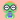

Dino Reader · Batch 50 (Slices 285, 283) · 2026-11-07
When the sound isn’t there yet, and Dino on Sonos
Slice 285 shipped the reading page’s sound line with no mock: a plain 14 px grey line between the picture and the buttons. These frames keep its place and its words and give it a shape: a pill with an icon, so it reads as a state and not as stray text. Only styling changes in
ReadingPage.xaml. Below them, the brand images Slice 283 needs for the Sonos portal, built to Sonos’s rules and ready to upload.Reading page sound line · Slice 285 C · phone
197 · Getting the sound · 3 of 15

The book’s Farsi sound isn’t on the phone yet, so the reading page starts the download itself (285 C). The line is the shipped string, “Getting {0} sound for your books 3 of 15”, with a “·” before the count. It sits in a soft brand pill with a small ring that fills book by book. Reading carries on as built: each piece shows for a beat with its highlight, and the first piece with a clip plays out loud. The pill leaves on that piece (
PieceAudio(true)). Nothing here asks a child to act.198 · Waiting for Wi-Fi
The shelf run is held by the Wi-Fi rule (or has no internet: “Waiting for the internet…”). Same place and words as built, in a neutral sand pill with a Wi-Fi icon, because nothing is moving. The mobile-data question stays a grown-up choice in Settings and is never asked here, on the child’s page. “Preparing…” uses this same quiet pill with no icon. When Wi-Fi comes back the pill turns into 197.
199 · One part has no sound
Now only when the newest installed sound really lacks this piece. The piece shows for its beat with the highlight, the sand pill with a muted speaker says so, and the next piece with sound plays and takes the pill away. It reads as a quiet note, not an error: no red, no button. If every piece of a book misses, the shelf run is at fault and the line is 197 or 198 instead.
Sonos brand assets · Slice 283 · files in
sonos/Built to Sonos’s Add logos page (read 2026-11-07): service logos need a solid, non-transparent background with no gradient and no rounded corners, so the app icon’s peach-to-pink gradient becomes one flat #FFBDB4. The full logo and badge must be solid white on transparent, so they use a one-colour Book hug drawn as cut-out shapes. Every file is plain paths, with no text or mask elements; the wordmark is Fredoka 600 converted to outlines.
Service logo · square

Dino Reader
Dino Reader
PNG 20, 40, 80, 112, 200, 400 and SVG 40, 400. The full-colour character on flat peach stands apart from Sonos’s light (#D8D8D8) and dark (#262626) grounds, shown with Sonos’s 1 pt border.
Full logo · 20 px high · and badge · 40 × 40
Now Playing · as Sonos shows it
Full logo: 129 × 20, white on transparent, no padding (Sonos: max 180 × 20). Badge: one-colour character, eyes, glasses, smile and book cut out. The 2× row shows the cuts survive.
Support banner · 800 × 200
For Sonos’s support site, above the service FAQ. White background, colour character and ink wordmark (Sonos allows white or transparent). PNG and SVG.